UNIVERSIDAD NACIONAL DE CÓRDOBA
FACULTAD DE CIENCIAS EXACTAS, FÍSICAS Y NATURALES
REDES DE COMPUTADORAS
Trabajo Práctico de Laboratorio N°1:
FUNDAMENTOS ESENCIALES E
INTRODUCCIÓN A PACKET TRACER
Comisión: ICOMP 24-3
Docentes: HENN, Santiago
Alumnos: LAMAS, Matías Angel
Torres Sosa Candelaria
Baiutti Bruno Augusto
4
Vazquez Zuloeta Fabian
6
Año: 2026
ÍNDICE
ÍNDICE 2
1 OBJETIVOS: 3
2 DESARROLLO: 3
Item 1: 3
Item 2: Cande/juan 4
Item 3: 4
Item 4: 4
3 BIBLIOGRAFÍA: 5
1 OBJETIVOS
- Repasar conceptos fundamentales de Comunicaciones. Establecer un vínculo entre la capa física y modelos de transmisión/recepción de datos.
- Presentar Packet Tracer, un simulador de redes utilizado para el diseño y análisis de redes de dispositivos.
2 DESARROLLO
Item 1:
- Como analizamos en la imagen la longitud de la onda es y la frecuencia, considerando que viaja a la velocidad de la luz 8, está dada por la relación (en este caso ). Entonces .
- La onda al tener una frecuencia de . Según la clasificación presentada por Stallings en la figura 4.1, esta frecuencia se encuentra dentro de la región de MICROONDAS del espectro electromagnético, más precisamente, pertenece a la banda FRECUENCIAS SUPER ALTAS (SHF Super High Frequency) que comprende desde .
- La tabla en la figura 4.1 describe como dispositivos de comunicaciones de datos a Antenas de Microondas y Radares en la banda SHF. Un ejemplo de uso cada vez más frecuente es en enlaces punto a punto a cortas distancias entre dispositivos, con aplicaciones típicas como circuitos cerrados de tv o interconexiones entre redes locales.
- El fenómeno que se quiere representar con la línea de trazos rojos es la ATENUACIÓN, que es la pérdida de la señal a medida que se propaga por un medio. La línea de trazos roja suele representar la envolvente de la pérdida de potencia o el límite máximo de amplitud que decae de forma exponencial con la distancia.
- Si, la atenuación afecta a los sistemas de radar y antenas de microondas, ya que provoca una disminución de la potencia de la señal durante su propagación. Si, se puede notar en la señal Wi-Fi que a medida que nos alejamos del router la señal se debilita debido a la pérdida de potencia.
- Si, el fenómeno de la atenuación afecta a las transmisiones de telefonía celular, porque la señal se atenúa a medida que aumenta la distancia y al atravesar obstáculos, como edificios y paredes. Las transmisiones por cable coaxial también son afectadas porque el cable presenta pérdidas de energía de la señal a medida que se propaga por el conductor. Y las transmisiones por fibra óptica sufren también la atenuación durante su propagación por la fibra.
Item 2:
- La transmision representada en la imagen es una transmision de tipo simplex ya que es unidireccional ademas de ser una transmisión digital sincrona donde ambos dispositivos de comunicacion comparten un reloj.
- El esquema actual de comunicación entre los dispositivos, no permite una comunicación bidireccional, por el hecho de tener una sola línea de datos. Tampoco permite alcanzar altas velocidades de transmisión porque el medio puede sufrir de desfasajes por frecuencias con retardos donde el receptor podría no llegar a tiempo y no leer el dato. Además de que el medio propio actúa como un filtro pasa-bajos redondeando la señal provocando que sea más difícil diferenciar los niveles lógicos, una atenuación.
- Caracter n minúscula trasmitido.
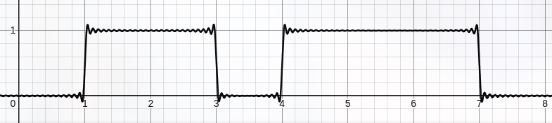
- Dada la pendiente en la señal proporcionada, un comportamiento esperado de un medio fisico, se deberia medir/muestrear la misma en un momento del tiempo donde el valor de tension se haya estabilizado, en este caso los momentos ideales son T0,T2,T4, evitando asi cualquier problema de incertidumbre o de rebote en la señal.
Item 3:
Investigar y resumir brevemente los motivos por los cuales no es conveniente transmitir de manera inalámbrica una señal escalonada, como las que vimos en los ejemplos. La transmisión de señales capaces de ser decodificadas en streams de datos digitales es un problema con muchas aristas, y que está en continua evolución. Con esto en mente, analizar el siguiente gráfico de ejemplo y responder las preguntas a continuación.
Contexto de transmisión de señales inalámbricas: las señales inalámbricas se transmiten por medio de ondas electromagnéticas, donde la antena juega un papel fundamental en la transmisión de estas ondas "irradiadas", ya que el tamaño de la antena depende de la longitud de onda (λ = c / f). El tamaño recomendado es de λ/4 o λ/2.
Por qué esto afecta a las ondas cuadradas: las ondas cuadradas ocupan un ancho de banda muy grande (desde frecuencias casi de 0 Hz hasta frecuencias del orden de GHz, según los armónicos necesarios para reconstruir sus flancos). Por lo tanto, para las componentes de frecuencia más baja de la señal, la antena debería tener un tamaño del orden de kilómetros, haciendo esto físicamente inviable.
Además, las bajas frecuencias tienen una mala propagación como ondas libres, ya que no se irradian bien en el aire.
Por otro lado, está el problema de que en el aire no hay canales específicos para cada señal, por lo tanto tendríamos un solapamiento de señales. Es decir, si dos transmisores emiten señales en la misma frecuencia y son cercanos, el receptor no tendría manera sencilla de separarlas.
Conclusión: por estas razones, tanto físicas como regulatorias (impuestas por el ENACOM en Argentina y la ITU internacionalmente), en lugar de transmitir tal cual una señal en banda base, se la usa para modular una onda portadora senoidal de alta frecuencia, trasladando su energía a una banda pasante específica (ya sea para WiFi, ondas de radio, etc.).
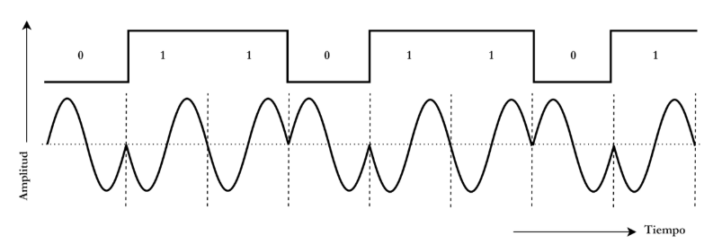
a) ¿Qué técnica de modulación se está representando?
Modulación por Desplazamiento de Fase Binaria.(BPSK)
En una portadora tenemos 3 casos de modulación:
- ASK: lo que varía es la amplitud de la onda portadora.
- FSK: lo que varía es la frecuencia de la onda.
- PSK: lo que varía es la fase (nuestro caso).
En nuestro caso, específicamente, se trata de una técnica de modulación BPSK (Binary Phase Shift Keying): la forma más simple de PSK, con exactamente dos valores de fase posibles, 0° o 180°.
b) ¿Cómo se vería la siguiente señal digital modulada? (Pueden graficar a mano alzada con paint)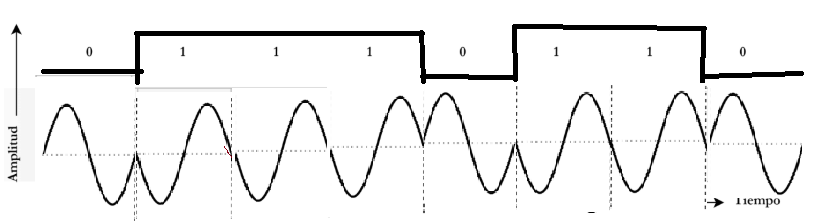
c) ¿Qué otras técnicas de modulación basadas en los mismos principios existen?
3 maneras, la 4-PSK, 8-PSK o QAM
Consisten en el mismo principio, dividir la onda senoidal en los bits que vamos a
ocupar, ejemplo; si usamos la 4-PSK, la onda senoidal se va a dividir en 0°,90°, 180° 270°, si tenemos 01 dependiendo de cómo hayamos dividido la onda es como se completa esa parte de onda.
En el caso de QAM se ocupa un diagram de constelación y prácticamente es lo mismo solo que cambia la amplitud, normalmente se ocupa de 3 o más bits.
d) ¿Qué es el Bit Error Rate (BER)?. En términos de BER, ¿Cuál de las técnicas de modulación presentadas anteriormente tiene mejores prestaciones?
El BER (Bit Error Rate) es la proporción de bits que llegan con error respecto al total de bits transmitidos, en un intervalo de tiempo determinado. Básicamente mide que tan confiable es la transmisión: cuanto mas bajo el BER, menos errores tiene el enlace.
El BER depende de varios factores: la relación señal-ruido (SNR) del canal, el tipo de modulación que se usa, y las características del canal en sí (atenuación, interferencia, etc).
En cuanto a cuál técnica tiene mejores prestaciones:
- ASK es la que peor se comporta frente al ruido, ya que la información viaja en la amplitud, y el ruido se suma directamente sobre la amplitud de la señal. Esto hace que sea más fácil confundir un símbolo con otro.
- FSK tiene mejor desempeño que ASK, porque la información está en la frecuencia y no en la amplitud, entonces el ruido (que afecta más que nada a la amplitud) le pega menos.
- PSK es la que mejores prestaciones tiene de las tres. Tampoco depende de la amplitud, y además los símbolos quedan más separados entre sí (en BPSK los dos estados posibles están a 180°, la máxima separación posible), por lo que es más difícil que el ruido la haga confundir un símbolo con otro.
Item 4:
//Despues lo voy a acomodar las imagenes y detallar mas el texto
a.
b.
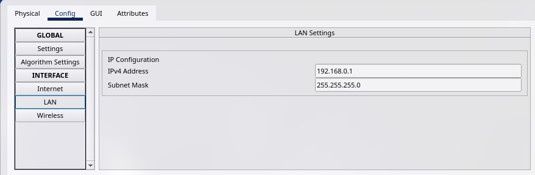
c.
Se puede apreciar las siguientes bandas de frecuencia de 2.412Ghz a 2.452Ghz con saltos de 5M, Opera en las frecuencias de microondas mas especificamente **FRECUENCIAS SUPER ALTAS** (SHF Super High Frequency) que comprende desde 3 GHz ~ 30 GHz.
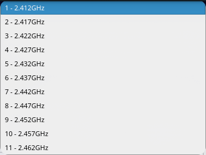
d.
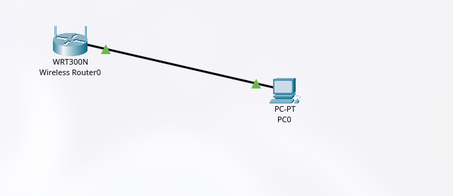
e.
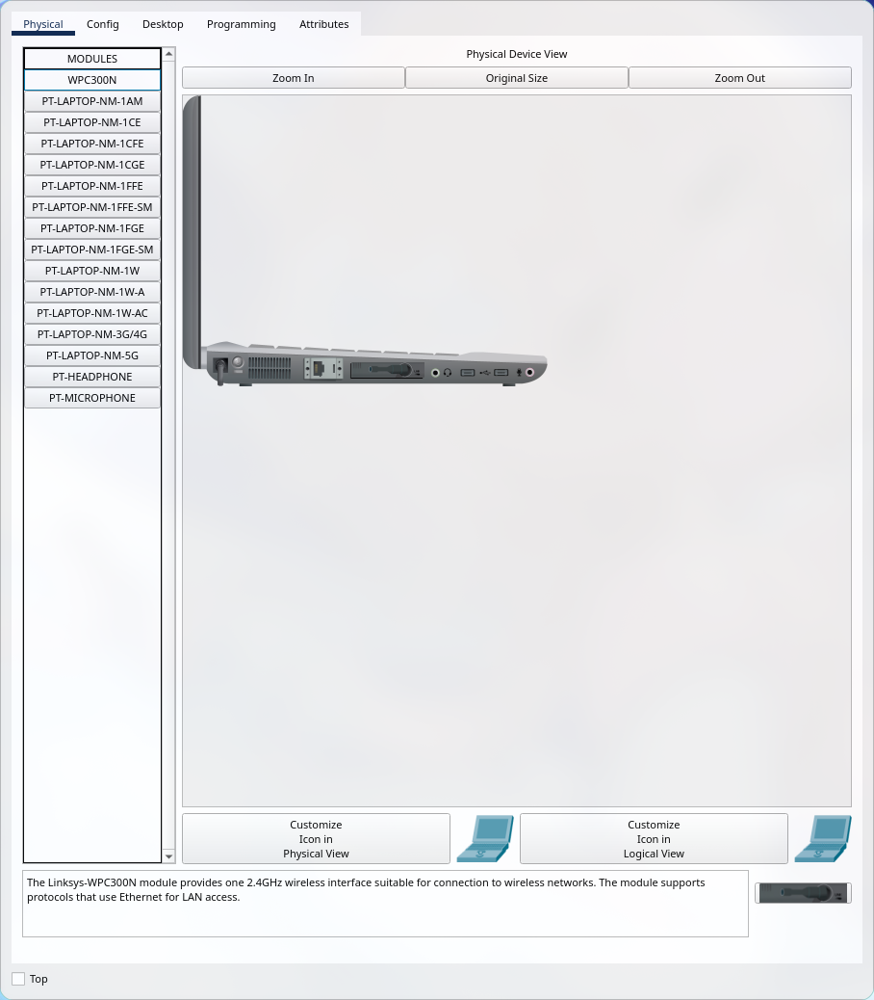
f.
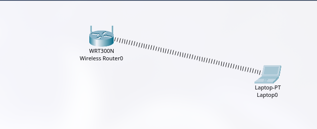
g.
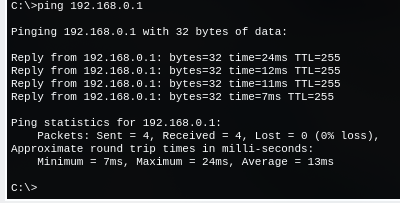
f.
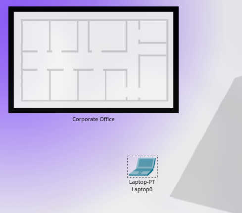
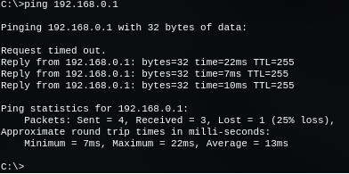
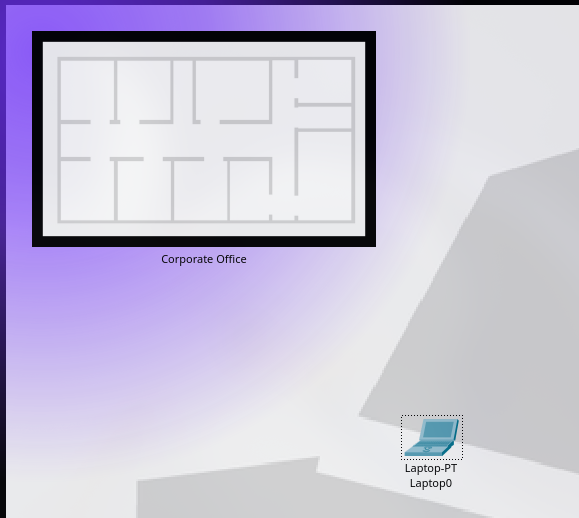
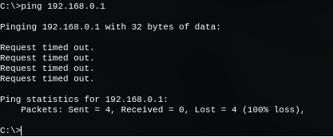
3 BIBLIOGRAFÍA
Comunicaciones y Redes de Computadores - William Stallings - 7ed:
- Capítulo 3.1: Conceptos y terminología.
- Capítulo 3.2: Transmisión de datos analógicos y digitales.
- Capítulo 3.3: Dificultades en la transmisión.
- Capítulo 3.4: Capacidad del canal.
- Capítulo 4.1: Medios de transmisión guiados.
- Capítulo 4.2: Transmisión inalámbrica.
- Capítulo 4.3: Propagación inalámbrica.
- Capítulo 4.4: Transmisión en la trayectoria visual.
- Capítulo 5.1: Datos digitales, señales digitales.
- Capítulo 5.2: Datos digitales, señales analógicas.
- Capítulo 6.1: Transmisión asincrónica y sincrónica.
- Capítulo 6.5: Configuraciones de línea.